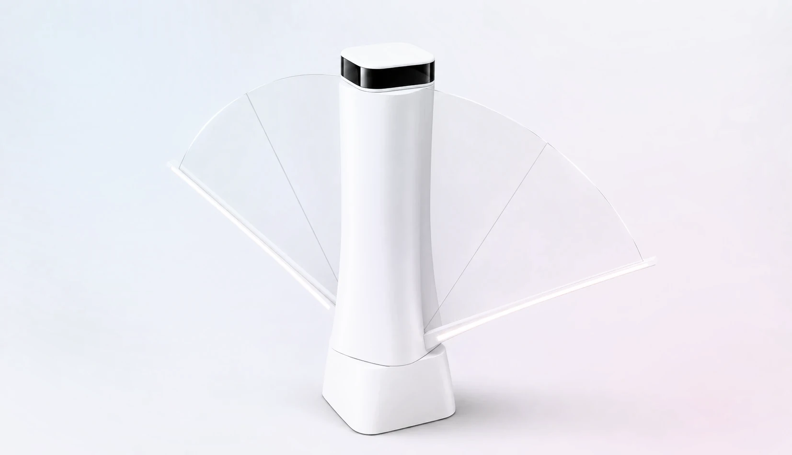
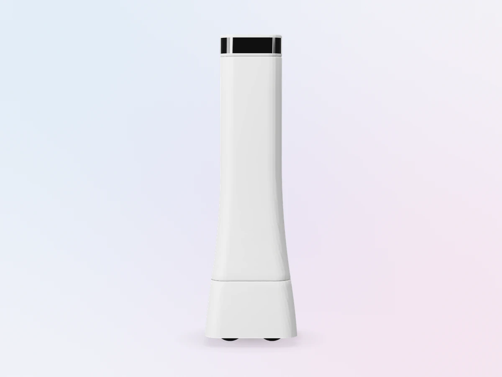
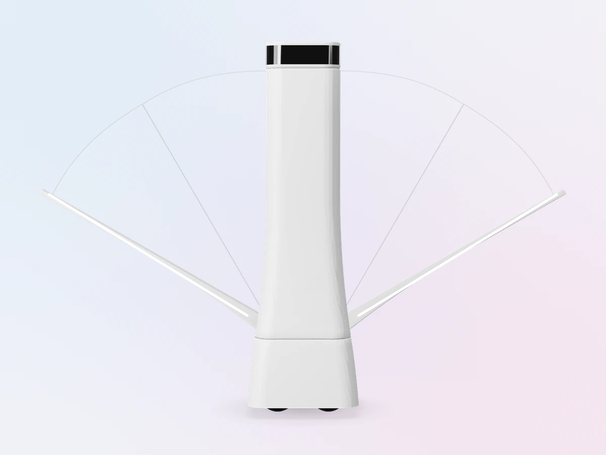
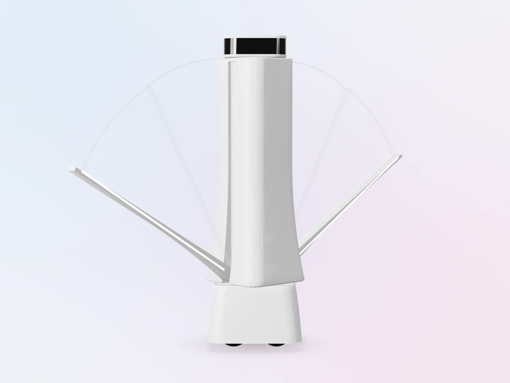
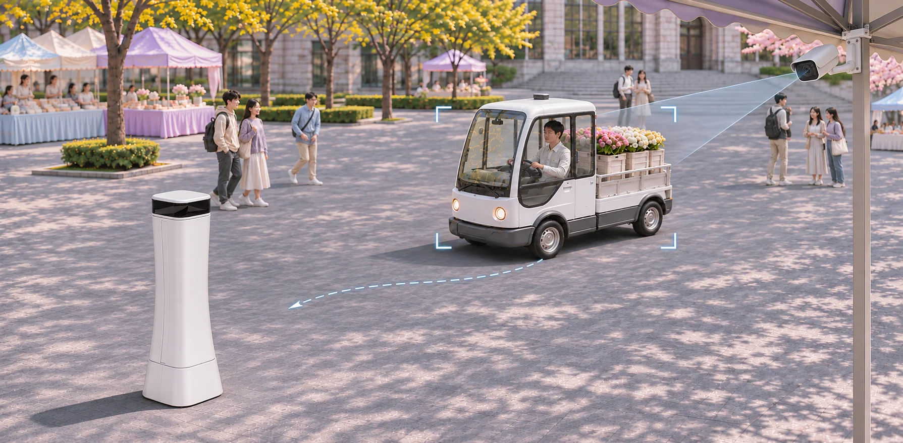
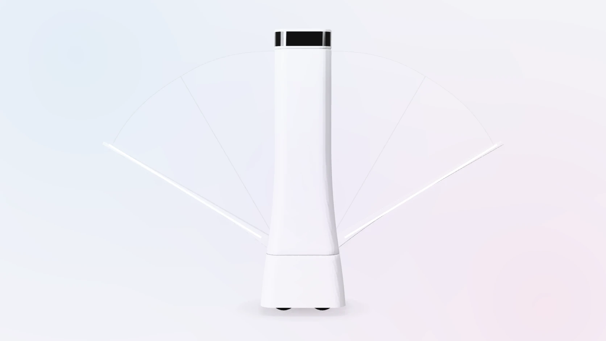

부스 앞에서
부스 앞에 줄을 서면 뒤에서 다가오는 차량을 알아차리기 어렵습니다.
2030 FUTURE WORLD · 한빛제 2030
필요한 순간, 길을 열다

02 · 동선 문제
부스 앞에 줄을 설 때도, 광장을 가로지를 때도 학생들은 차량과 길을 나눠 씁니다.
부스 앞에 줄을 서면 뒤에서 다가오는 차량을 알아차리기 어렵습니다.

차량이 어느 쪽으로 지나갈지 몰라 광장을 건너던 학생들이 걸음을 멈춥니다.
03 · 핵심 기능
PATH GUARD는 스스로 이동하고, 가림막을 펼치고, 방향을 돌려 축제 광장에 임시 통행로를 만듭니다.

가림막을 접은 슬림한 상태로 하단 바퀴를 굴려 사람들 사이를 지나, 차량 경로 옆 지정 위치까지 스스로 이동합니다.

자리에 도착하면 부채처럼 접혀 있던 투명 가림막을 양옆으로 펼쳐, LED 레일과 함께 차량 동선과 보행 공간을 나눕니다.

가운데 기둥과 가림막이 360° 회전해, 차량이 들어오는 방향에 맞춰 바리케이드의 방향을 바로 잡습니다.
04 · 작동 원리
AI가 차량의 접근을 감지하면 로봇들이 제자리로 이동해 임시 통행로를 만듭니다.

광장의 AI 카메라가 진입 차량을 감지하고 예상 경로를 로봇에 전달합니다.

각 로봇은 가림막을 접은 채 차량이 지나갈 길의 양옆으로 이동합니다.

자리를 잡은 로봇들이 투명 가림막을 펼쳐 차량이 지나는 길과 사람이 걷는 공간을 나눕니다.
05 · 사용 장면
「사용 전 — 사용자의 상황」
06 · 디자인
무광 화이트 본체 양옆으로 투명한 가림막이 부채처럼 펼쳐집니다. 가장자리의 은은한 빛이 차량 통로를 따라 경계를 그립니다.

07 · 사양과 소재

크기
높이 110 cm × 본체 지름 40 cm
무게
약 35 kg
배터리 포함
소재
투명 유리 가림막
컬러
오팔 화이트 본체
블랙 센서 밴드
마감
본체 무광 마감
전원
24 V 충전식 리튬인산철 배터리
20 Ah
센서
외부 AI 카메라 연동
연결
로봇 간 위치 정보 공유